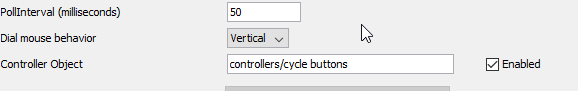
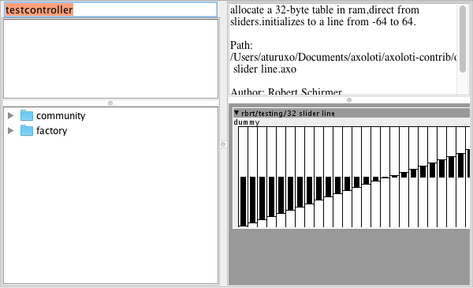
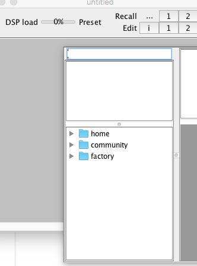
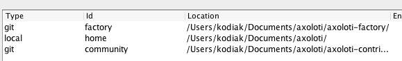
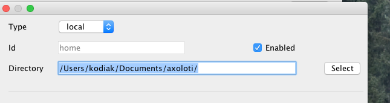

MOD NOTE: Ive moved this to a new topic
Some news about patch switching made easier?

MOD NOTE: Ive moved this to a new topic
Some news about patch switching made easier?
there is a controller object
controllers/pgmchange
( I think also one for gpio iirc)
and the new patch bank functionality,
combined these allow you specify a set of patches, uploaded to the sdcard and then switch with midi program change messages.
(theres a little more on this thread, though it also covers other ways of doing it, if you have more specific requirements)
Thanks a lot. I have not view this options. I am using momentary buttons conected to digital inputs but I imagine it should work the same way more or less.
I gonna try!
Hi again thetechnobear,
If I want to use two digital momentary buttons, one to increase and the other to decrease patches from my SDcard through GPIO/IN/DIGITAL how should I proceed?
I found the steps you posted in the other thread but I don´t get the overall flux.
I undertand that I have to create a sub-patch (.axs) and save it inside 'local library' and then go to 'file/preferences/Controller object' to select and enable this file in order to be used inside every patch I want to swith.
I understand I should upload all my patches from 'file/New patch bank/Upload patch bank'
What I really don´t get is what objects should I put inside that subpatch that is going to be the Controller.
If this is explained somewhere please let me know.
Thans in advance.
look at controller/cycle buttons, this provides the basics of what you want.
the 'new' thing thats important there is the patch/bankindex object, this is the 'missing link'
this returns the current patch number (i.e. the index in the patch bank) , which you can then use with patch/load to load the next or previous patch.
one limitation, I dont think we store the 'maximum patch index' anywhere ... perhaps @johannes this should be added, so that a controller object can cycle within 0... N .
( I think currently you just get a message in the console if you try to load something outside the index)
Sorry for by my clumsiness. Where do I have to insert that objects? and How do I should conect them? I rade some threads and they show differents options. Finally I would like to use buttons S1/S2 and I guess I can understand the configuration steps that, after reading multiple threads, I can summarize as follows:
I create a subpach (.axs) called 'control' and put it inside axoloti local library folder.
In preferences/controller object I write 'control' whitout .axs and click 'enable'
I go to File/New patch bank and add one by one the three sines provided by johannes (axoloti-contrib/patches/jt/patchbank-test) to the patchbank
Then I upload first 'bank table' and then every patch one by one
I create an empty patch and upload to SDcard 'as startup'
Then 'File/reload objects'
Disconect Axoloti and push S1/S2 switches
My problem is that I really cannot imagine how to create the subpatch that I have to put inside 'local' library using controller/cycle and patch/bankindex.
Is there some example somewhere? I have tried recreate the patch showed in this thread (http://community.axoloti.com/t/how-to-use-patch-banks-and-controller-object-with-s1-and-s2-buttons/1936) but I don´t get anything, I guess it is out of date.
I really appreciate any help to clarify this.
Thanks for your help
Hi .. I made a folder controllers inside my object folder, and placed my controller objects there.
then reload objects from menu, and finally enable the object

cycle buttons.axs (2.4 KB)
hope it helps
Thank you very much the thetechnobear and philoop for your quick answer.
I have tried this but unsuccessfully.
I put your subpach in my documents/axoloti/objects folder and made what you explained:
This is my SDcard content after upload index and patches:
Should I include some object in every patch? Some idea about what I am doing bad?
If it's in the objects directory, you don't need to prefix it with objects/
( that would only be necesary if is in a sub directory)
I have tried the process multiple times but I don´t get it to work.
I add the objects directory just in case but nothing. Can I check from the Axoloti Editor what I am doing bar?
Finally I paste philoop 'cycle buttons.axs' in every pach including 'as startup' and I made it work, so I guess I am doing something wrong with 'Controller Object' or directories. I f someone find it up I really appreciate ideas.
Thanks for your help
i recommend creating a folder in the object folder named controllers, then reload objects and enable.
then if you load a patch you can see in the console if controller is enabled.
If it is, then you can use bank upload ...the cycle buttons.axs will be added to patches when saving to the sd card.
can we see your console log
the console log should show something like:
Using controller object: xand if its not able to find the object something like
Unable to created controller for : xits useful to see this, to ensure this is the issue, rather than something else.
there really is nothing special about controller objects, they are used in the same way as other objects.
( I really should have used the object selection dialog to allow selection, to make it a little simpler, but it wasn't often an issue, so forgot about it... but I think now with patch banks more users are using it!)
Thanks philoop and thetechnobear for your time. I tried again and I think this is the problem. It says booth things, first:
Using controller object: x
and then...
Unable to created controller for : x
Here a terminal picture:
ok... I think you need to go back a step or two... as its and issues with your paths
so :
Test 1
i) delete the extra 'objects' library you added, this is unnecessary .
ii) delete / move your custom 'cycle buttons' object... as we need to test with the one from the factory first
iii) cut n paste the following into preference/controller object (and make sure its enabled)
controller/cycle buttons
iv) compile a patch, and make sure the you see using controller object, but that you dont get the 'unable to created' error.
this should work.
if this works , move to test 2.. if it doesn't then stop at test 1!
Test 2
i) move your custom object to
documents/axoloti/objects
call it something different (testcontroller, so in file testcontroller.axs) , do NOT call it cycle buttons, we dont want a 'name clash' with the factory object
ii) open a patcher,
iii) check that you can see testcontroller , under home in the object browser
iv) select it in the object browser, this will bring its name to the top edit box
you can then copy the name, from here
v) go to preferences, and past the name into controller object
vi) compile a patch, and again check you get 'using controller object', but not the 'unable to create' error
Fist test is ok.
Test 2:
i) done √
ii) done √
iii) "check that you can see testcontroller , under home in the object browser" do you mean here?

test 1 - cool
test 2
ok, you dont have 'home' listed, which means either your library setup is incorrect, or you are not putting the object where it needs to be.

your libs should be something like: (different username obviously)

then you need to put your object in
/Users/aturduxo/Documents/axoloti/objects
and it needs to be called something like
testcontroller.axs
(btw: you may, possibly, need to restart axoloti, after putting it in that directory, I cant remember off-hand)
if you still dont see the object in the object browser, then its not in the right place.
(I suspect this has been the issue from the start)
Nothing... I think it has to be related with the path:
When I reload objects these are the paths:
search path : /Users/aturuxo/Documents/axoloti/axoloti-factory/objects
search path : /Users/aturuxo/Documents/axolotiobjects
search path : /Users/aturuxo/Documents/axoloti/axoloti-contrib/objects
Is it normal the second path ending 'axolotiobjects'?
no, thats wrong..
/Users/aturuxo/Documents/axolotiobjectsshould be:
/Users/aturuxo/Documents/axoloti/objects
to correct this:
file -> preferences
select the 'home' library in the list box, click edit
then check that the directory has a / at the end.
eg.

{kind=link}
{kind=link}
{kind=link}
{kind=link}